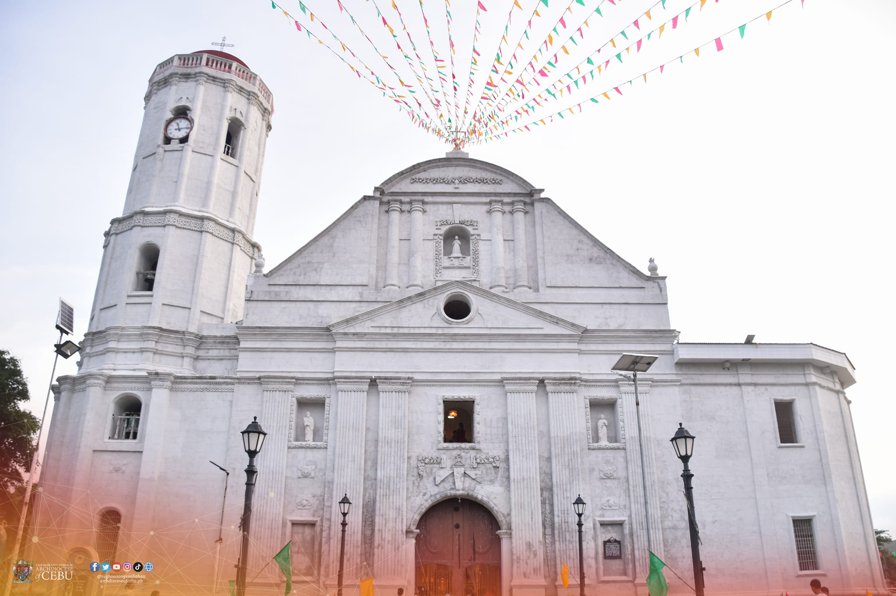

Dumanjug church is probably the most handsome of the 19th century churches in western Cebu.
Made of finely cut coral, its hews closer to the neoclassical idiom for the sedate and chaste simplicity
of its decorative elements. The bell tower to one side of the church has a dodecagonal plan, usual for
colonial churches.